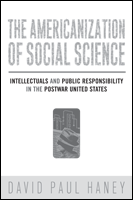

<body bgcolor="#FFFFFF" text="#000000" link="#0000FF" vlink="#CC0000" alink="#CC0000"><center><hr width="350" size="1" align="center" noshade>A controversial explanation for sociology's isolation from American society<hr width="350" size="1" align="center" noshade><p><a href="https://cdcshoppingcart.uchicago.edu/Cart/ChicagoBook.aspx?ISBN=9781592137138&&PRESS=temple" target="_top">Buy this book!</a> | <a href="https://cdcshoppingcart.uchicago.edu/Cart/Cart.aspx?PRESS=temple" target="_top">View Cart</a> | <a href="https://cdcshoppingcart.uchicago.edu/Cart/Cart.aspx?PRESS=temple" target="_top">Check Out</a></p><p></p></center><!--none//--><h1>The Americanization of Social Science</h1>
<H2>Intellectuals and Public Responsibility in the Postwar United States</H2>
<h3>David Paul Haney</h3>
<P>cloth 159213713X $50.50, Jan 08, <FONT COLOR=#990033>Available</FONT>
<br>paper 1592137148 $29.95, <FONT COLOR=#990033>Available</FONT>
<br>Electronic Book 1592137156 $29.95 <FONT COLOR=#990033>Available</FONT>
<BR> 296 pp
6x9
</P><BLOCKQUOTE><I>"</i>The Americanization of Social Science <i>is written so beautifully, so engagingly, and Haney is so widely read in the sociology and context of the 1950s, that this is both a wonderful social history of the discipline and, at the same time, an astute sociological analysis of the field's consolidation. The 1950s may not have been quite the golden age of sociology, but it certainly attracted messianic intellects, the likes of which we have not seen since. This book puts them all in motion, as some struggled to shore up professional boundaries while others exploded into the public arena. This is sure to further stimulate the debate about public sociology.</i></i>"<br>&#151<b> Michael Burawoy</b>, Department of Sociology, University of California, Berkeley</I></BLOCKQUOTE>
<p>A highly readable introduction to and overview of the postwar social sciences in the United States, <i>The Americanization of Social Science</i> explores a critical period in the evolution of American sociology's professional identity from the late 1940s through the early 1960s. David Paul Haney contends that during this time leading sociologists encouraged a professional secession from public engagement in the name of establishing the discipline's scientific integrity.
<p>
According to Haney, influential practitioners encouraged a willful withdrawal from public sociology by separating their professional work from public life. He argues that this separation diminished sociologists' capacity for conveying their findings to wider publics, especially given their ambivalence towards the mass media, as witnessed by the professional estrangement that scholars like David Riesman and C. Wright Mills experienced as their writing found receptive lay audiences. He argues further that this sense of professional insularity has inhibited sociology's participation in the national discussion about social issues to the present day.
<BR>&nbsp;<h2>Excerpt</h2><P>Excerpt available at <a href="http://www.temple.edu/tempress">www.temple.edu/tempress</a></p>
<BR>&nbsp;<h2>Reviews</h2>
<p><i>"Sociology was far more than an academic discipline in the middle decades of the last century: it exploded into the national consciousness as the preferred mode of enquiry for many of America�s most influential public intellectuals. In his exciting and learned probe, historian David Haney explains why sociological discourse was so important in this era and why its very political and ideological acuteness generated an internal backlash that soon isolated it from many of the great questions defining American society in the 1960s and after. Written in a highly accessible and incisive fashion, Haney�s book is a major achievement."</i><br>&#151<b>Nelson Lichtenstein</b>, Professor of History, University of California, Santa Barbara
<P><I>"This is an important and timely work�. [W]hile it is excellent as an intellectual history of the sociological discipline from the late 1940s to the early 1960s, its importance in illuminating questions of the public role of intellectuals in a modern democratic society gives it a far wider significance�. This is a fluent, well-constructed, soundly researched and informative work that fills in an important but little-understood aspect of postwar American social, cultural and intellectual history." <br>&#151<b></i><a href="http://metapsychology.mentalhelp.net/poc/view_doc.php?type=book&id=4471&cn=139" target="new"><I>Metapsychology Online</a></I></b>
<P><I>"Haney makes a valuable and thoughtful contribution to our discipline�s understanding of its own history of public engagement and the dilemmas that emerge from professionalization. Well-written and carefully researched, Haney�s book gives us a comprehensive overview of post-war American sociology with an emphasis on the ways that the discipline attempted to overcome its relative marginalization within the North American higher education system and broader intellectual culture." <br>&#151<b></i><a href="http://ejournals.library.ualberta.ca/index.php/CJS/article/view/4169" target="new"><I>Canadian Journal of Sociology (Online)</a></I></b>
<P><I>"[V]ery readable...The author's documentation of the debate over sociology's appropriate identity from the 1930s to the 1960s provides rich quotes illustrating the professional arguments about sociology's purpose. Drawing on strong research, Haney deftly argues through the voices of major spokesmen.... Recommended." </i><br><b>&#151 Choice</b>
<p><i>"[E]ngaging, well-written.... Haney has made a valuable contribution to the history of mid-twentieth-century American sociology."</i><br>&#151;<b><i>The Journal of American History</i></b>
<P><I>"Haney demonstrates how sociology was remade in a self-conscious effort to insulate the discipline from public discussion of social issues. His arguments...are developed intelligently using new as well as familiar sources.... The most compelling theme of this interesting book is how sociologists in the early postwar period found new reasons to be cynical about democracy." </i><br><b>&#151 American Historical Review</b>
<p><i>"Haney has presented us with a well-written historical narrative of some shifting themes, shifting interests, and shifting affiliations within American sociology in the period from the late 1940s through the early 1960s." </i><br>&#151;<b><i>The British Journal of Sociology</i></b>
<p><i>"David Paul Haney's </i>The Americanization of Social Science<i> is a welcome contribution to [the] scholarship. Haney examines the struggle for a coherent professional identity among sociologists between 1945 and 1963. In particular, he focuses on the tension between sociologists' quest for scientific status and academic standing vis-�-vis social relevance and public engagement....In perhaps the most eye-opening chapters in the book, Hanley draws on archival professional correspondences as well as book reviews to capture the mixed feelings and dynamics associated with the marginalization of diffident sociologists."</i> <br>&#151;<b><i>The Journal of Sociology and Social Welfare</i></b>
<p><i>"This is an excellent study that explores sociology's ambivalent engagement with the public....Haney's story fills in the background to the recent attempts to construct a public sociology....After reading Haney's fine book it is difficult to avoid the conclusion that we should spend less time obsessing about maintaining professional boundaries and devoting more effort to developing ideas worthy of our public." </i><br>&#151;<b><i>The British Journal of Sociology</i></b>
<p><i>"Haney suggests, the marginalization of American sociology from both policy and public discourse was all but inevitable. As intellectual history, Haney�s book is most valuable for showing that it did not have to turn out this way." </i> <br>&#151<b><i>The Journal of American Studies</i></b>
<p><i>�[Haney] makes a valuable contribution to sociological history by including �public sociology,� whose thematic significance has resonated over the last decade.�</i><br>&#151;<b><i>Scientia Canadensis</i></b>
<BR>&nbsp;<h2>Contents</h2><P>
<br>Preface
<br>Acknowledgements
<br>1. Introduction
<br>2. The Postwar Campaign for Scientific Legitimacy
<br>3. Quantitative Mathods and the Institutionalization of Exclusivity
<br>4. Social Theory and the Romance of American Alienation
<br>5. Theories of Mass Society and the Advent of a New Elitism
<br>6. Fads, Foibles, and Autopsies: Unwelcome Publicity for Different Sociologists
<br>7. Pseudoscience and Social Engineering: American Sociology's Public Image in the Fifties
<br>8. The Perils of Popularity: Public Sociology and Its Antagonists
<br>9. Conclusion: The Legacy of the Scientific Identity
<br>Bibliography
<br>Index
</P><BR>&nbsp;<H2>About the Author(s)</H2>
<table><tr><td valign="top"><img src="/tempress/authors/1945_au.gif" height="90" width="75"></td><td width="100%" valign="middle"><p><b>David Paul Haney</b> is an Adjunct Professor at Austin Community College and St. Edward's University</P></td></tr></table>
<BR><H2>Subject Categories</H2>
<p><A HREF="/tempress/sociology.html" TARGET="_top">Sociology</a>
<BR><A HREF="/tempress/american.html" TARGET="_top">American Studies</a>
<BR><A HREF="/tempress/general.html" TARGET="_top">General Interest</a>
</p>
<p align="center"><a href="https://cdcshoppingcart.uchicago.edu/Cart/ChicagoBook.aspx?ISBN=9781592137138&&PRESS=temple" target="_top">Buy this book!</a> | <a href="https://cdcshoppingcart.uchicago.edu/Cart/Cart.aspx?PRESS=temple" target="_top">View Cart</a> | <a href="https://cdcshoppingcart.uchicago.edu/Cart/Cart.aspx?PRESS=temple" target="_top">Check Out</a></p><p><font face="Arial" size="1"><a href="copyright.html" onMouseOver="window.status='Web Copyright Policy';return true;" onMouseOut="window.status=''" title="Web Copyright Policy">&copy;</a> 2015 <a href="http://www.temple.edu" target="new" onMouseOver="window.status='Link to Temple University home page';return true;" onMouseOut="window.status=''" title="Link to Temple University home page">Temple University</a>. All Rights Reserved. http://www.temple.edu/tempress/titles/1945_reg.html</font></p>